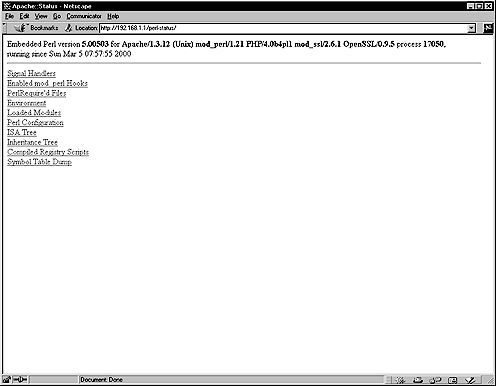

| Securing and Optimizing Linux: RedHat Edition -A Hands on Guide | ||
|---|---|---|
| Prev | Chapter 29. Software -Network Server, web/Apache | Next |
If you intend to use the mod_perl programming language support with your Apache web server, it can be interesting to install the small perl module program named Devel::Symdump. This third party module will allow you to inspect perl's symbol table and the class hierarchies within a running program. To build and install it, follow these steps.
These are the package(s)
| Devel-Symdump Homepage:http://www.perl.com/CPAN/modules/by-module/Devel/ |
| You must be sure to download: Devel-Symdump-2_00_tar.gz |
| Devel-Symdump version number is 2.00 |
[root@deep ]/# cp Devel-Symdump-version.tar.gz /var/tmp/
[root@deep ]/# cd /var/tmp/
[root@deep ]/tmp# tar xzpf Devel-Symdump-version.tar.gz
|
Move into the new Devel-Symdump directory and type the following commands on your terminal to compile and install the module on your Linux server:
[root@deep ]/Devel-Symdump-2.00# perl Makefile.PL
[root@deep ]/Devel-Symdump-2.00# make
[root@deep ]/Devel-Symdump-2.00# make test
[root@deep ]/Devel-Symdump-2.00# make install
|
Once the module has been installed on your system, you must include in your /etc/httpd/conf/httpd.conf file the following lines to be able to see the status of different Perl modules on the server: Edit the httpd.conf file, vi /etc/httpd/conf/httpd.conf and add the following lines:
<Location /perl-status>
SetHandler perl-script
PerlHandler Apache::Status
Order deny,allow
Deny from all
Allow from 192.168.1.0/24
</Location>
|
You must restart the Apache web server for the changes to take effect: To restart Apache, use the following commands:
[root@deep ]/# /etc/rc.d/init.d/httpd restart
|
Shutting down http: [ OK ]
Starting httpd: [ OK ]
|
Finally, we must test the new Devel-Symdump module to be sure that we can see status of different Perl modules on the server.
To verify that it works, points your web browser to the following address: http://my-web-server/perl-status/. The <my-web-server> is the address where your Apache web server resides.

Please as always Cleanup :
[root@deep ]/# cd /var/tmp
[root@deep ]/tmp# rm -rf Devel-Symdump.version/ Devel-Symdump-version.tar.gz
|
| /usr/lib/perl5/man/man3/Devel::Symdump.3 |
| /usr/lib/perl5/site_perl/5.005/i386-linux/auto/Devel |
| /usr/lib/perl5/site_perl/5.005/i386-linux/auto/Devel/Symdump |
| /usr/lib/perl5/site_perl/5.005/i386-linux/auto/Devel/Symdump/.packlist |
| /usr/lib/perl5/site_perl/5.005/Devel |
| /usr/lib/perl5/site_perl/5.005/Devel/Symdump |
| /usr/lib/perl5/site_perl/5.005/Devel/Symdump/Export.pm |
| /usr/lib/perl5/site_perl/5.005/Devel/Symdump.pm |